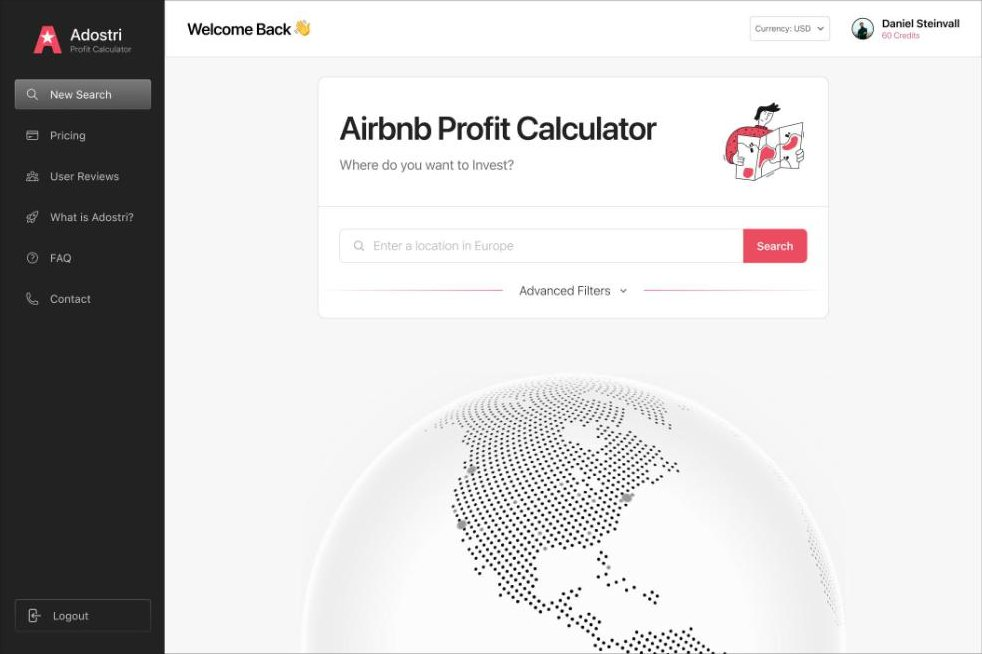
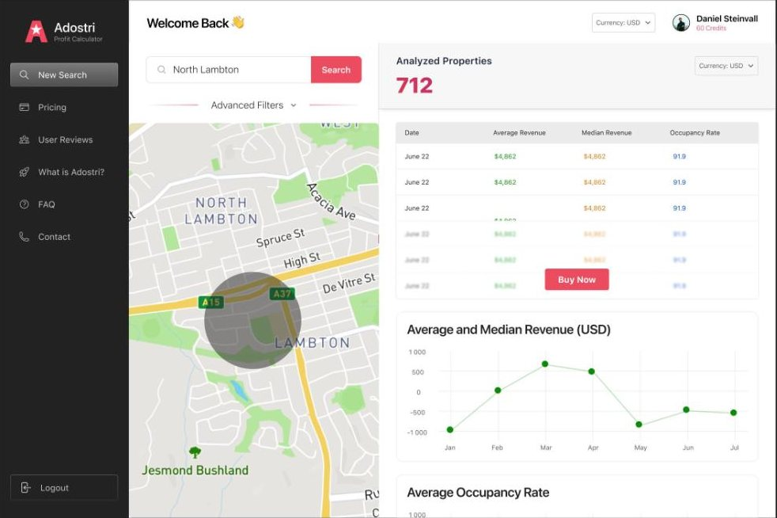
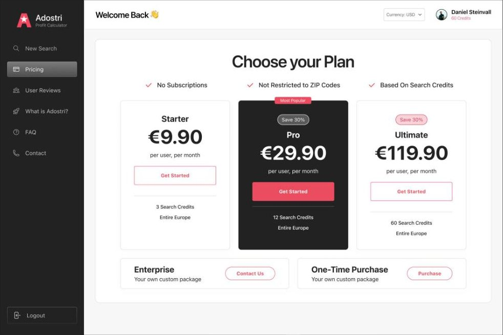

Product design for Adostri, an Airbnb profit calculator that shows hosts and investors what a property could earn before they commit.

The challenge. Short-let data is noisy. The product needed to turn an address into an answer someone could act on, then make the deeper analysis worth paying for.
Our approach. We kept the first step to one field: type an address, get an estimate. The analysis view puts nearby properties on a map beside revenue, daily rate and occupancy, and the plans step up from starter to investor.
An Airbnb Profit Calculator that starts with a single address search over a calm globe illustration.
A map of targeted properties next to a revenue table and charts for average daily rate and occupancy.
Three plans from a starter tier to a high-volume investor tier, with the most popular one highlighted.
A sidebar layout that keeps search, saved properties and reports one click apart.

